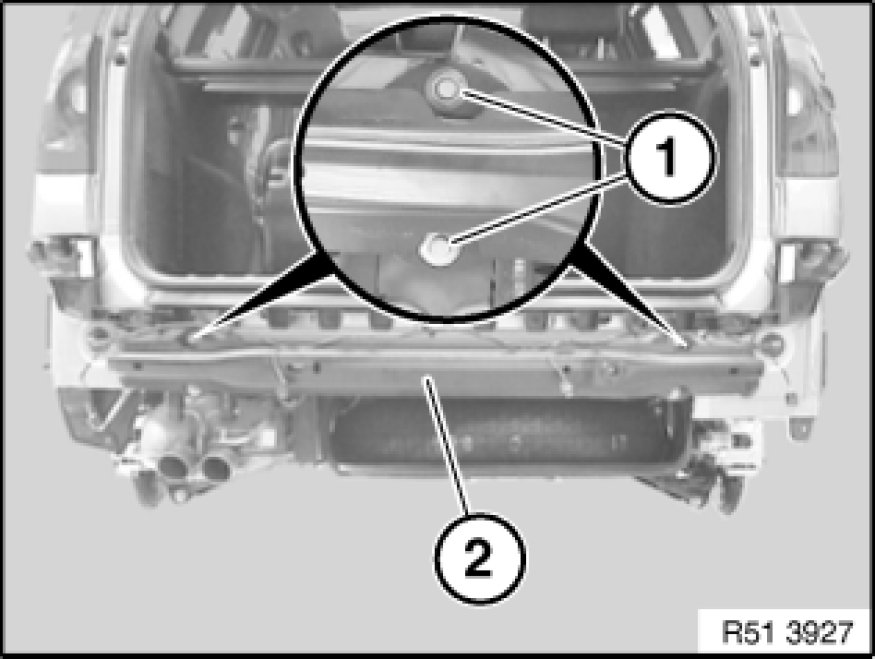

Rear Bumper Reinforcement: Service and Repair
51 12 050 - Removing and installing / replacing carrier for rear bumper trim

Necessary preliminary tasks:
- Remove bumper trim

Release nuts (1) on left and right.
Remove carrier (2).
Tightening torque 51 12 3AZ [1][2]Rear Bumper.